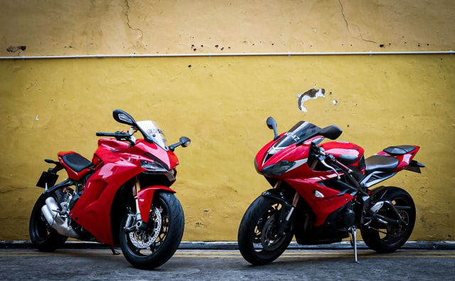

A motorcycle, often called a motorbike, bike, cycle, or (if three-wheeled) trike, is a two- or three-wheeled motor vehicle. Motorcycle design varies greatly to suit a range of different purposes: long-distance travel, commuting, cruising, sport (including racing), and off-road riding. Motorcycling is riding a motorcycle and being involved in other related social activity such as joining a motorcycle club and attending motorcycle rallies. The 1885 Daimler Reitwagen made by Gottlieb Daimler and Wilhelm Maybach in Germany was the first internal combustion, petroleum-fueled motorcycle. In 1894, Hildebrand & Wolfmüller became the first series production motorcycle.
